| Select the room temperature: 20 ℃ |
|
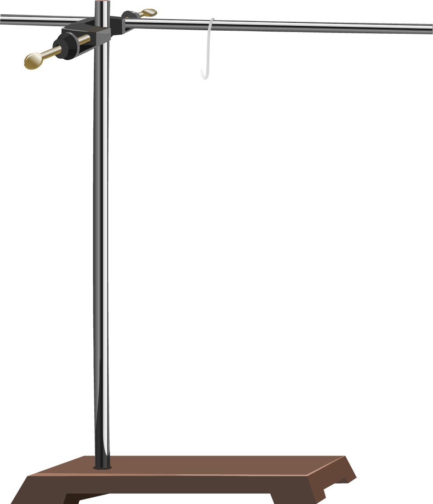
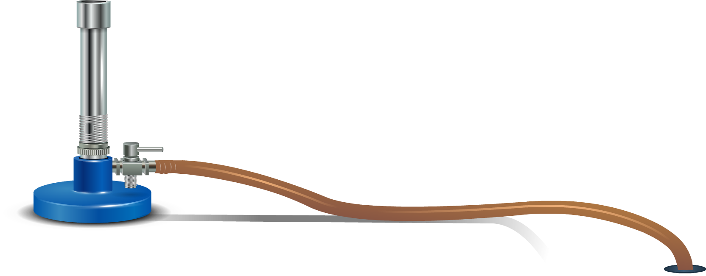

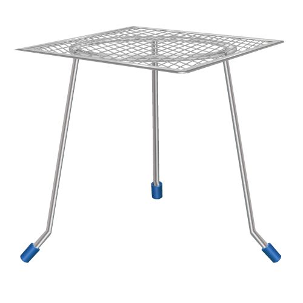
Min
00
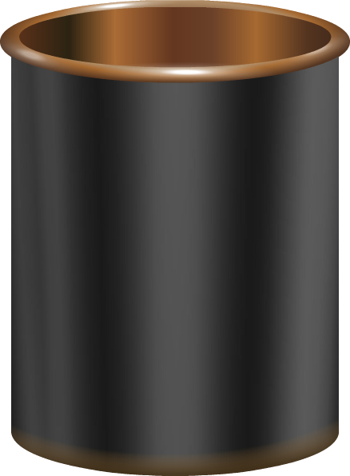
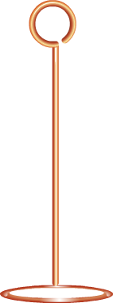
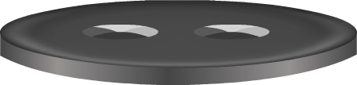
Temperature:20℃
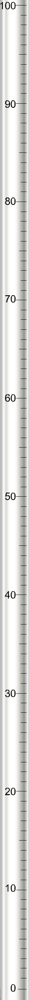
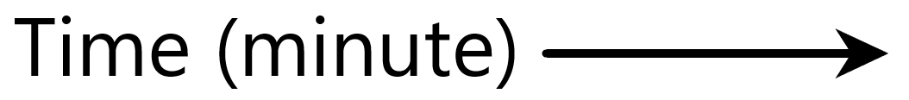
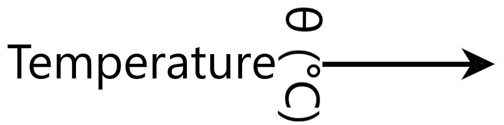
| x-axis :1 cm = 5 minute y-axis :1 cm = 10°C |
| Sl.No. | Time (minute) | Room Temperature(℃) | Temperature of water(℃) | Temperature difference(℃) |
|---|
Conclusion
|